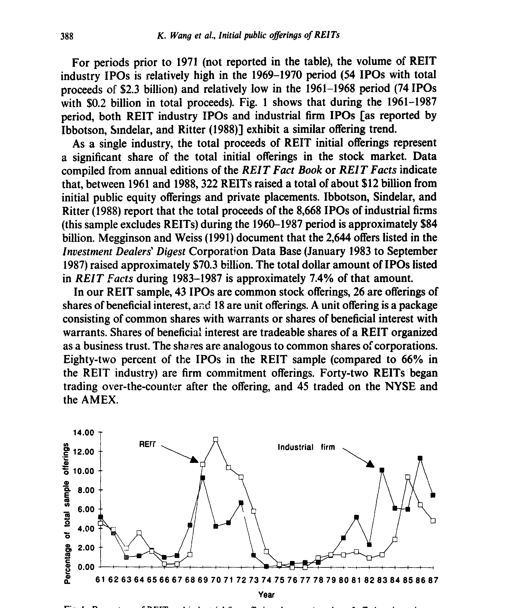
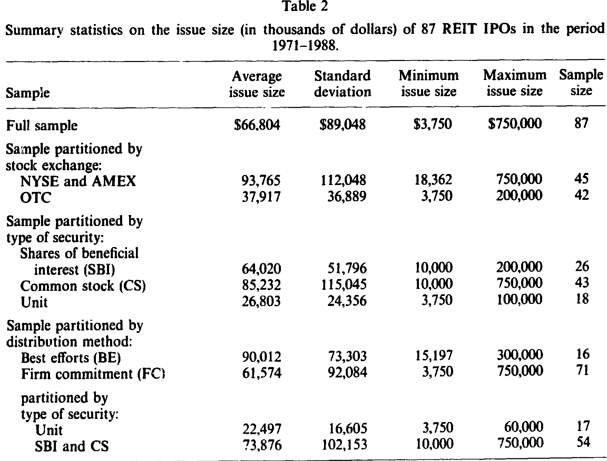
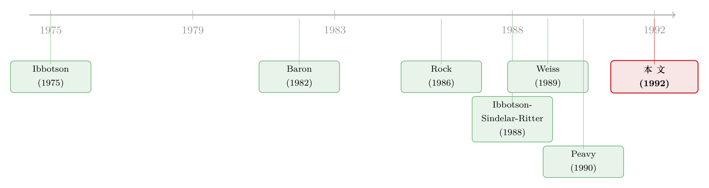

新股的『免费午餐』，为什么到了 REIT 这桌就变成了账单？
本文读的是 Wang, Chan & Gau (1992, Journal of Financial Economics)：当几乎所有研究都告诉我们「新股第一天会跳涨、平均给你 15% 以上的折价红利」时，作者用 1971–1988 年 87 只 房地产投资信托 (real estate investment trust, REIT) 的首发样本算出了一个相反的数字——上市第一天平均收益是 -2.82%（t = -4.36）。新股不是被「打折」卖给你，而是被「溢价」塞给你；而接盘的，恰恰是散户。
1 一顿人人都想蹭的「免费午餐」
先说一件几乎写进教科书的事实：买新股，第一天大概率能赚钱。
Smith (1986) 综述了五项关于 首次公开发行 (initial public offering, IPO) 的研究，结论是平均 折价 (underpricing) 超过 15%；Ibbotson, Sindelar & Ritter (1988) 用 1960–1987 年间 8,668 只 IPO 的大样本，算出平均首日收益 16.37%。对于一个像 IPO 这样「日期早就定好、谁都知道哪天上市」的可预测事件来说，短短一天就有这么大的期望收益，本身就像是对市场有效性的一种挑衅。于是理论家们前仆后继：Baron (1982) 和 Rock (1986) 用信息不对称去解释它，Tinic (1988) 诉诸法律责任与诉讼风险，Allen & Faulhaber (1989)、Welch (1989) 则用信号传递。
这些模型有一个共同的潜台词：折价是个普遍现象，差别只在程度。
可偏偏有人不服。Muscarella (1988) 发现 55 只 主连有限合伙 (master limited partnership, MLP) 的首发几乎不折价，某些子样本甚至是 -0.53%、-0.19% 的轻微负收益；Loderer, Sheehan & Kadlec (1991) 发现 251 只优先股新发也看不出折价；而 Weiss (1989) 与 Peavy (1990) 则记录了 封闭式基金 (closed-end fund) 首发——首日收益与零无异，却在随后 100–120 个交易日里持续跑输市场。
异象的裂缝已经出现。这篇论文做的，是把这道裂缝撕开到最大。
关于「新股到底是打折还是溢价」这个争论本身，可参见《新股到底是「打折」卖，还是「溢价」卖？》——它讨论了把负收益的尾巴「按平」之后折价之谜还剩多少。
2 为什么偏偏挑 REIT？
接着，一个自然的问题是：要找一个能把现有 IPO 理论逼到墙角的样本，该去哪里找？
作者的答案是 REIT，而这个选择本身就是论文最精巧的一步。
封闭式基金虽然也「不折价」，但 Peavy 和 Ibbotson 等人辩护说，这恰恰支持信息不对称假说——基金持有的是股票，市价天天看得见，资产价值几乎没有不确定性，按 Rock (1986) 的逻辑，没有信息不对称自然就没有折价的必要。这套说辞自洽得让人无从下手。
REIT 则不同。它投资的是「不常交易」的实物资产——物业和按揭。这些资产没有连续的市场价格：有些 REIT 在发行时甚至都不说清楚要拿募来的钱去买什么，投资者根本无法对一笔尚未确定的地产收购定价。Titman & Warga (1986) 直言「由于这些信托极高的波动性，用任何一种业绩指标都很难得到准确的度量」；Howe & Shilling (1988) 也说「REIT 的经营现金流通常很难预测」。
于是逻辑链条变得清晰：REIT 的估值不确定性远高于普通工业企业。按照现有 IPO 理论（不确定性越大、折价越深），我们本该预期 REIT 首发被更狠地折价才对。
这就是作者埋下的陷阱。如果 REIT 也大幅折价，理论安然无恙；可如果 REIT 不但不折价、反而溢价，那么——无论是 Rock 的信息不对称、还是 Peavy 关于「发行费用摊薄 + 卖压」的故事——没有任何一个现有模型能解释它。
3 识别策略：一场朴素却抗造的事件研究
然后，论文进入了最「土」也最干净的部分。
这不是一篇结构模型论文，也没有花哨的工具变量。它的识别核心就是一个事件研究 (event study)：以发行价为基准，量出上市第一天收盘价（或 OTC 股票的买价）相对发行价的收益率，看它到底是正是负。
$$ R_{i} = \frac{P_{i,1} - P_{i,0}}{P_{i,0}} $$
其中 \(P_{i,0}\) 是发行价，\(P_{i,1}\) 是第一个交易日的收盘价（或买价）。简单到不能再简单。
但论文真正的功夫，在于它把这个数字在各种切法下反复拷问——这才是它说服力的来源。样本被按交易所（NYSE/AMEX vs OTC）、证券类型（普通股、受益权份额、单位）、发行价、发行规模、发行方式（firm commitment vs best efforts）逐一切开。如果「溢价」只是某种制度细节的副产品，它应该在某些切法下消失；可它没有。
为了堵住「会不会是几个极端值在作祟」的质疑，作者还做了三件事：
- 用符号检验 (sign test) 和 Wilcoxon 符号秩检验——它们不受收益分布偏度的影响——确认中位数也显著为负；
- 任意剔除首日收益低于
-7%的 9 个观测，看剩下的还显不显著； - 用标普 500 指数的同期日收益做市场调整。
这是一种「我把所有能想到的辩护理由都替你试一遍」的写法。
4 数据：87 只 REIT，跨越 18 年
初始样本来自历年《REIT Fact Book》列出的 322 只 REIT 首发（1961–1988），其中 132 只能找到发行价与发行特征。逐层筛掉没有上市后价格数据的、首发与上市相隔超过两个月的、混入认股权证或以「单位」打包发行的等等，最终得到 87 只 REIT，发行期覆盖 1971–1988。
几个值得记住的数字：平均发行价 $15.69（最低 \$5、最高 \$25），平均发行规模约 $67 百万——远大于工业企业 IPO，却小于封闭式基金。样本中 43 只是普通股、26 只是受益权份额、18 只是单位发行；82% 采用 firm commitment（行业整体为 66%），42 只在 OTC、45 只在 NYSE/AMEX 上市。
如图 1 所示，1961–1987 年间 REIT 行业的首发节奏，与 Ibbotson 等人记录的工业企业首发其实高度同步——两者都在 1971–1973 和 1985–1988 两段时间扎堆。换句话说，REIT 并不是一个躲在角落里的小众市场：1961–1988 年间 322 只 REIT 通过首发与私募共募集约 $120 亿美元，单是 1983–1987 年的首发金额就约占同期全市场 IPO 的 7.4%。

Figure 1: Percentage of REIT and industrial firm offerings by year (number of olTerin?s in each year
而发行规模的横切面（如表 2）也透露出一个细节：OTC 上市的、单位发行的、firm commitment 的 REIT，平均规模更小。这一点稍后会和「谁在买」连起来。

Table 2
5 主要结果：第一天就开始下跌
于是反转出现。
全样本的平均首日收益是 -2.82%（t = -4.36），最高 7%、最低 -30%。更直白的是分布：87 只里只有 10 只（12%）首日上涨，55 只（63%）下跌，22 只（25%）原地不动。中位数 -1.25% 同样显著为负（符号检验 z = -2.47，Wilcoxon z = -4.66）。
抗造性检验全部过关：
- 任意剔除 9 个
< -7%的观测后，平均收益仍是-1.12%（t = -3.58）； - 市场调整后，均值
-2.99%（t = -4.54）、中位数-1.55%； - 那些因数据不全而被删掉的 25 只 REIT，均值、中位数首日收益是
-7.8%和-5%——把它们加回来只会让溢价更夸张。
切开看，结论纹丝不动：所有子样本的平均首日收益都为负、且在 10% 水平上显著。哪怕只看「普通股 + 受益权份额 + firm commitment」这个最贴近以往 IPO 研究口径的子样本，平均收益也有 -1.09%（t = -2.51）。唯一显著的组间差异来自交易所：OTC 的 REIT 比 NYSE/AMEX 的 REIT 更被高估 2.99 个百分点（t = 2.30）。
更长的窗口里同样不乐观：相比一组匹配的「老」REIT，新发 REIT 在头 190 个交易日里显著跑输。而且——这一点直接打在 Peavy 的脸上——封闭式基金的价格下跌往往延迟 20 天以上（他归因于卖空限制和承销商托价），可 REIT 的下跌从第一个交易日就开始了。Peavy 那套「发行费摊薄 + 卖压」的解释，如果成立就该适用于一切新股，包括 REIT；首日即跌，恰恰说明它讲不通。
把这些放在一起：现有的 IPO 理论几乎都在解释「为什么折价」，而这篇论文摆出的是一个系统性溢价。它不是「折价小一点」，而是符号反了。
6 真正关键的一步：谁在接盘？
但全文真正点睛的，不是那个负号，而是对「谁在买」的追问。
如果一群理性的、信息充分的投资者明知 REIT 首发会跌，他们为什么还买？作者发现：买入这些被高估 REIT 的，以个人投资者或非 13(f) 机构为主。流行的财经媒体早就注意到 REIT 缺乏机构兴趣、被「积极地卖给散户」——VMS Mortgage 的招股书甚至披露，四只关联 REIT 把总额 \$4.75 亿的股份卖给了 33,600 名投资者（人均约 \$14,000）。
这就把整个故事闭环了。一边是估值高度不确定、机构避之不及的资产；另一边是被承销渠道「推销」给信息劣势散户的份额。溢价不是哪个理性均衡的产物，而更像是一个分销与投资者结构的结果——聪明钱躲开了，留下来的人替这份不确定性付了过高的价。
这也呼应了一个更普遍的问题：新股上市第一天那汹涌的成交，背后到底站着谁？（关于这一点，可参见《新股第一天的滔天成交，到底是谁在交易？》。）
值得玩味的是：实务界其实早就知道了。纽约金融学院 (1988) 直接建议投资者回避新发 REIT；两家成功的地产基金把秘诀归结为「等 REIT 价格跌到有吸引力的折扣再买」；Audit Investment 的 Kenneth Campbell 更是直言：「如果我能用 10% 到 20% 的折扣买到不错的物业，为什么要付全价？」——而这些话，是在金融学界已经严谨记录了工业企业 IPO 巨大正收益之后说出来的。市场里的人和论文里的人，看到的是两个相反的世界。
7 文献脉络
把这条线捋一遍，会更清楚这篇论文站在哪里。
最早是 Ibbotson (1975) 系统记录了新股的价格表现，奠定了「IPO 折价」这一事实基础；随后 Ibbotson, Sindelar & Ritter (1988) 用近万只样本把它钉成了铁律。理论一侧，Baron (1982) 从投行与发行人的信息不对称切入，Rock (1986) 用「赢家诅咒」给出了最有影响力的折价模型，Tinic (1988) 则补上了法律责任的视角。
转折来自那些「不折价」的样本：Muscarella (1988) 的 MLP、Weiss (1989) 与 Peavy (1990) 的封闭式基金。它们松动了「折价普遍存在」的信念，但都还能被信息不对称假说收编（资产价值看得见，所以不折价）。
本文 (Wang, Chan & Gau, 1992) 的位置，是把样本换成了价值最不透明、最该折价的 REIT，结果却得到显著的溢价——从而把现有理论逼到了无法自洽的境地。它不是又一块拼图，而是一个反例。

8 评论与延伸（Q&A + 研究方向）
(a) 几个可能的疑问
Q：这篇论文有没有可能只是「样本太小、年代太老」的偶然？
不太像偶然。87 只看似不多，但 t = -4.36 的统计量、12%/63%/25% 的正负零分布、以及在六种切法下一致的负号，都指向一个系统性现象而非噪声。它更可能受限于「外部有效性」——1971–1988 年的 REIT 市场结构、税制和投资者构成，未必能直接推广到今天机构化程度高得多的 REIT 市场。
Q：「溢价」会不会只是测量问题——比如 OTC 股票用买价而非成交价导致系统性偏低？
这是最该担心的一点。作者部分回应了它：剔除无成交量的观测、用 firm commitment 子样本（多在交易所成交、用收盘价）单独检验仍得
-1.56%。但 OTC 比交易所更高估2.99个百分点这一事实，确实留下了「微观结构偏差」与「散户更集中于 OTC」两种解释难以完全分开的尾巴。
Q：它和封闭式基金的「不折价」到底有什么本质区别？
封闭式基金持有的是有市价的股票，资产价值几乎透明，按信息不对称逻辑「不折价」是预期之内。REIT 持有的是无连续市价的实物资产，不确定性更大，本该更折价却反而溢价——所以 REIT 是真正的反例，封闭式基金只是边界情形。
Q：既然首日就跌、长期还跑输，为什么散户还前赴后继地买？
论文没有给出行为模型，只给了事实：买家以个人/非 13(f) 机构为主，且份额被「积极推销」。最自然的解读是分销渠道把估值最难、机构最不愿碰的产品导向了信息劣势的一端，而不是某种理性均衡。
Q：这是否意味着存在一个可交易的策略——「做空新发 REIT」？
理论上诱人，现实里很难。新发 REIT 早期往往借不到券、卖空受限，且单只规模小、流动性差。实务界给出的「等跌到折扣再买」反而更可行——这本身也间接印证了溢价的真实性。
Q：发行方式（best efforts vs firm commitment）重要吗？
两者都溢价，但 best efforts 子样本更夸张（论文报告其平均首日收益约
-8.39%，而 firm commitment 约-1.56%）。这与「质量更差、更不确定的发行更依赖 best efforts」的直觉一致，但样本中 best efforts 只有 16 只，需谨慎。
(b) 几个可能的研究问题与提案
1. REIT 溢价在现代机构化市场里还剩多少？
【经济故事】1990 年代后 REIT 经历了「现代化」，机构持股、分析师覆盖、信息环境都今非昔比。如果溢价主要由「散户接盘 + 信息不透明」驱动，那么随着机构占比上升，溢价应当收敛甚至翻转为折价。这能直接检验本文的机制解释。 【可行性】高。SDC/Dealogic 的 IPO 数据 + CRSP 首日价格 + 13F 机构持股，按上市年代或机构占比分组做事件研究即可，识别清晰。
2. 把「谁接盘」做成因果：承销渠道如何决定投资者结构？
【经济故事】本文的核心猜想是分销渠道把高估证券导向散户。若能找到承销商网络或零售经纪占比的外生变化，就能检验「渠道→投资者结构→首日溢价」这条链。 【可行性】中。需要配售层面或经纪层面的数据（多为专有），识别外生变动是难点；可借鉴 IPO 配售文献的设计。
3. 把 REIT 的「资产不透明度」量化，验证不确定性—溢价关系。
【经济故事】本文用定性论证说 REIT 比工业企业更不透明。若能用「募资用途是否明确指定」「物业组合的可观测程度」构造一个不透明度指标，就能检验溢价是否随不透明度单调变化——这会把异象从「反例」推进到「机制」。 【可行性】中。需手工编码招股书中的资产明细，工作量大但 doable；招股书可从 EDGAR 获取（1996 年后）。
4. 信用市场里有没有平行的「溢价」？——首发公司债与外资持有人。
【经济故事】如果「不透明 + 散户接盘 = 溢价」的逻辑成立，那么在估值同样不透明、且投资者结构高度分化的市场（如高收益债首发、或被外资大量持有的信用产品）里，是否也存在系统性的首日溢价？这与公司债流动性、外资持有人的研究方向天然契合。 【可行性】中。TRACE 提供公司债首笔成交价，可构造「新债首日收益」；外资持有人结构可用 Morningstar/EPFR 或监管持仓数据匹配，识别需小心区分流动性折让与定价偏差。
我的判断
这篇论文的贡献在于用最锋利的一个样本，给一整套理论制造了一个干净的反例。它没有炫技的计量，靠的是选题的精准——挑出价值最不透明、最该被折价的资产，结果偏偏得到溢价，于是任何「越不确定越折价」的模型都无法收场。这种「用反例逼问理论」的写法，今天依然值得学。
对识别的担忧主要有两点。其一是微观结构：OTC 用买价、样本年代久远、流动性差，使得「溢价」与「测量偏差」难以彻底切割，尽管作者已尽力用 firm commitment 子样本和中位数检验去防守。其二是机制只到「相关」：论文把溢价与「散户接盘」放在一起，但没有外生变动来证明是渠道把高估证券推给了散户，还是散户的偏好本身抬高了价格——这正是后续研究最该补的一刀。
我最想看到的，是把这套逻辑搬到今天的数据上：如果 REIT 溢价随机构化而消退，那么本文的机制解释就被证实；如果它顽强地留存，那说明「不透明资产 + 分销结构」造出的定价偏差，比我们以为的更结构性、也更值得警惕。
参考文献
Allen, F. and G. R. Faulhaber (1989). Signaling by underpricing in the IPO market. Journal of Financial Economics 23, 303–323.
Baron, D. P. (1982). A model of the demand for investment bank advising and distribution services for new issues. Journal of Finance 37, 955–974.
Howe, J. S. and J. D. Shilling (1988). Capital structure theory and REIT security offerings. Journal of Finance 43, 983–993.
Ibbotson, R. G. (1975). Price performance of common stock new issues. Journal of Financial Economics 2, 235–272.
Ibbotson, R. G., J. L. Sindelar and J. R. Ritter (1988). Initial public offerings. Journal of Applied Corporate Finance 1, 37–45.
Loderer, C. F., D. P. Sheehan and G. B. Kadlec (1991). The pricing of equity offerings. Journal of Financial Economics 29, 35–57.
Muscarella, C. J. (1988). Price performance of the initial public offerings of master limited partnership units. Financial Review 23, 513–521.
Peavy, J. W. (1990). Returns on initial public offerings of closed-end funds. Review of Financial Studies 3, 695–708.
Ritter, J. R. (1987). The costs of going public. Journal of Financial Economics 19, 269–281.
Rock, K. (1986). Why new issues are underpriced. Journal of Financial Economics 15, 187–221.
Smith, C. W. (1986). Investment banking and the capital acquisition process. Journal of Financial Economics 15, 3–29.
Tinic, S. M. (1988). Anatomy of initial public offerings of common stock. Journal of Finance 43, 789–822.
Titman, S. and A. Warga (1986). Risk and the performance of real estate investment trusts: A multiple index approach. AREUEA Journal 14, 414–431.
Wang, K., S. H. Chan and G. W. Gau (1992). Initial public offerings of equity securities: Anomalous evidence using REITs. Journal of Financial Economics 31, 381–410.
Weiss, K. A. (1989). The post-offering price performance of closed-end funds. Financial Management 18, 57–67.